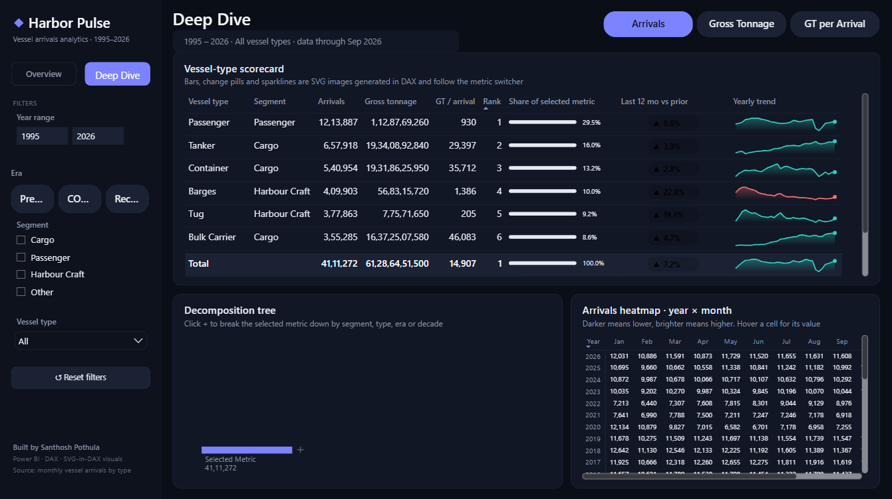

A two-page Power BI dashboard exploring 3,000+ monthly records of vessel arrivals and gross tonnage (1995 to 2026) by vessel type, with trailing-12-month KPIs, a COVID recovery index and DAX-generated SVG visuals.
Use the metric switcher, year range, era and vessel-type slicers. Every chart, KPI and title responds.

Figures cover the full 1995 to 2026 range unless noted.
Average gross tonnage per arrival grew 4.3% a year, from about 6.8K GT in 1995 to about 24K GT in 2025. Arrival counts grew just 0.8% a year.
Annual arrivals fell 37% between 2019 and 2021. The last 12 months are back to 2019 levels, and tonnage is already 117% of its 2019 level.
Passenger craft make up the most arrivals, but container ships and tankers carry most of the tonnage. Counting calls alone gives the wrong picture.
Saved as a Power BI Project (PBIP): the model is TMDL and the report is PBIR JSON, so every measure and visual is versioned as readable text.
An arrivals fact table with Calendar (marked date table, era and decade), Vessel Type (segment hierarchy) and a disconnected Metric table that drives the switcher.
Trailing-12-month change, a recovery index against 2019, CAGR over complete years, a 12-month rolling average, share, rank, and dynamic titles and subtitles.
Sparklines, gradient share bars and change pills are built as data:image/svg+xml strings in DAX and shown in a native table. No custom-visual imports needed.
A hand-written theme JSON with surface layers, an indigo and teal accent palette, Segoe UI type, and green/red conditional colors for gains and losses.
Year, era, segment, vessel-type and metric slicers are synced across both pages, with page navigation and a one-click reset.
Power Query loads the CSV straight from this GitHub repo with Web.Contents, so the model refreshes anywhere without a gateway.
Example: the trailing-12-month change behind each KPI tile.
Arrivals L12M = VAR a = [Anchor Date] -- end of the latest month in the current selection RETURN IF ( NOT ISBLANK ( a ), CALCULATE ( [Vessel Arrivals], DATESINPERIOD ( 'Calendar'[Date], a, -12, MONTH ) ) ) Arrivals YoY % = DIVIDE ( [Arrivals L12M] - [Arrivals Prior L12M], [Arrivals Prior L12M] )